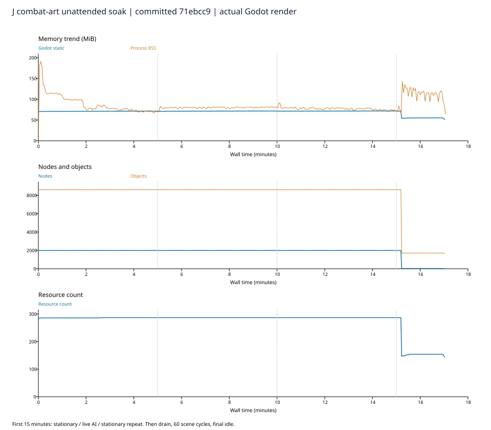

900.0秒持续压力 · 60次场景释放 · 633项检查 /0失败
固定提交71ebcc9；本测试窗口内未见节点/同角色资源持续累积。小幅静态内存趋势和测试环境限制见完整报告，不代表绝对零泄漏或所有玩法通过。
| 阶段 | 静态MiB范围 | MiB/分钟 | RSS MiB范围 |
|---|---|---|---|
| 350动画敌人/持续技能 | 70.83–71.34 | +0.140 | 66.94–101.42 |
| 350敌人AI/持续技能 | 71.18–71.74 | +0.136 | 76.91–81.77 |
| 关闭AI后重复压力 | 71.42–71.88 | +0.118 | 69.53–80.33 |
